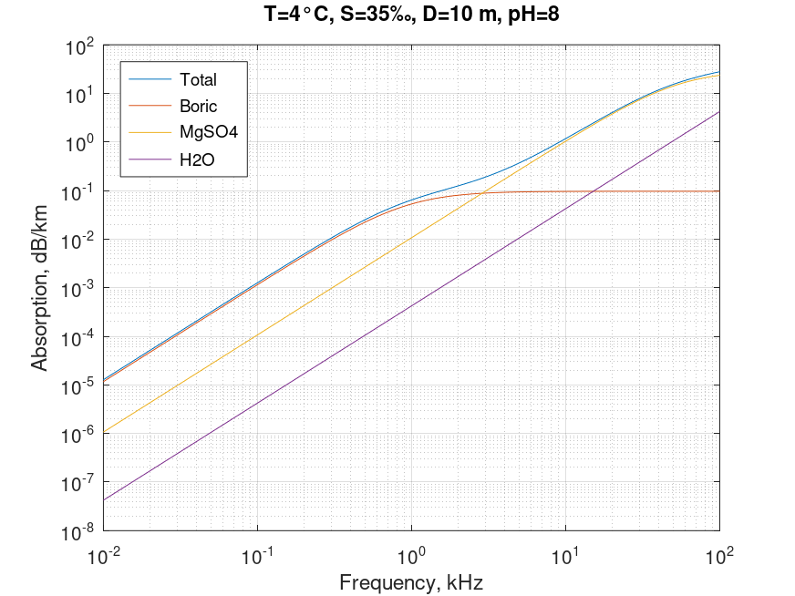

Sound absorption in sea. Ainslie & McColm equation
Mathematical definition
$$\boxed{\alpha \left( {T,S,D,f,pH} \right) = \frac{{{A_1}{P_1}{f_1}{f^2}}}{{{f_1}^2 + {f^2}}} + \frac{{{A_2}{P_2}{f_2}{f^2}}}{{{f_2}^2 + {f^2}}} + {A_3}{P_3}{f^2}}$$
| Notation | Description | Conversion | Units | Limits |
|---|---|---|---|---|
| $\alpha$ | absorption | $dB/km$ | ||
| $T$ | temperature | $^{\circ}C$ | $-6 < T < 35$ | |
| $S$ | salinity | $‰$ | $5 < S < 50$ | |
| $D$ | depth | $m$ | $0 < D < 7000$ | |
| $f$ | frequency | $kHz$ | $10^{-1} < f < {10^3}$ | |
| $pH$ | acidity | $7.7 < pH < 8.3$ |
$${A_1} = 0.106 \times \exp \left( {\left( {pH - 8} \right)/0.56} \right)$$
$${P_1} = 1$$
$${f_1} = 0.78\sqrt {S/35} \exp \left( {T/26} \right)$$
$${A_2} = 0.52\left( {S/35} \right)\left( {1 + T/43} \right)$$
$${P_2} = \exp \left( { - D/6} \right)$$
$${f_2} = 42\exp \left( {T/17} \right)$$
$${A_3} = 0.00049\exp \left( { - \left( {T/27 + D/17} \right)} \right)$$
$${P_3} = 1$$
| Notation | Description | Conversion | Units | Limits |
|---|---|---|---|---|
| $f_{1}$ | boric acid relaxation frequency | $kHz$ | ||
| $f_{2}$ | magnesium sulphate relaxation frequency | $kHz$ | ||
| $\frac{{{A_1}{P_1}{f_1}{f^2}}}{{{f_1}^2 + {f^2}}}$ | boric acid contribution | $dB/km$ | ||
| $\frac{{{A_2}{P_2}{f_2}{f^2}}}{{{f_2}^2 + {f^2}}}$ | magnesium sulphate contribution | $dB/km$ | ||
| ${A_3}{P_3}{f^2}$ | pure water contribution | $dB/km$ |
Octave/Matlab implementation
function [alpha, Boric, MgSO4, H2O] = sound_absorption_sea_ainslie(T,S,D,f,pH)
% Arguments
% T: temperature \ degree Celsius
% S: salinity \ ppt
% D: depth \ m
% f: frequency \ kHz
% pH: "potential of hydrogen"
% Results
% alpha: absorption of sound in seawater \ dB/km
D = D*1e-3;
% Boric
A1 = 0.106*exp((pH-8)./0.56);
P1 = 1;
f1 = 0.78*sqrt(S./35).*exp(T./26);
Boric = (A1.*P1.*f1*(f.^2))./((f.^2)+(f1.^2));
% MgSO4
A2 = 0.52*(S./35).*(1+T./43);
P2 = exp(-D./6);
f2 = 42*exp(T./17);
MgSO4 = (A2.*P2.*f2*(f.^2))./((f.^2)+(f2.^2));
% H2O
A3 = 0.00049*exp(-(T./27+D./17));
P3 = 1;
H2O = A3.*P3.*(f.^2);
% Total
alpha = Boric + MgSO4 + H2O;
end
Computational examples

References
- Ainslie, Michael A; McColm, James G, "A simplified formula for viscous and chemical absorption in sea water", 1998